The rise of rock and metal is often characterized as a split from tradtional and popular music of the time, creating a type of raw and aggressive music. This style of music was very different than the music generally accepted by mainstream culture. In the early days, metal music was seen as negative and very dangerous to many people as it was accepted with open arms by the youth. The distorted guitars, loud drums, and lyricism were not always accepted in the public eye, which caused metal to be seen as an outcast. Even with all the negative connotations with the music, this rebellious style was deeply inspired by classical music.
To understand the foundation of heavy metal, you must understand the foundation of classical music. Many melodic ideas within rock are rooted in classical music. Many pioneers of rock and metal grew up classically trained and interested in classical music theory and approach. Using knowledge of some of the greatest works composed, famous bands such as Deep Purple, Ozzy Osbourne, Rainbow, and more, have found ways to take these ideas and put them behind distorted guitars and fast tempos. Classical music has helped metal evolve all around within its subgenres with the use of techniques and approaches.
Like the Romantic Era, metal music thrives off of emotion, individualism, and rebellion, thus giving metal music a foundation for the music as the Romanticism era consisted of many people rejecting the Enlightenment era ideas and breaking the social norms. Metal music has been seen adopting anti-authoritarian and anti-mainstream views. This often shows up in metal music by creating a dark, dramatic theme accompanied by direct lyricism and fast tempos.
This website showcases the relationship between the genres, giving insight into the direct quotes and why. Getting in detail about the parameters used and the benefits of it. Including many audio examples of different subgenres of rock and metal to show the importance of classical music.
Listeners of classical music often use the descriptive words triumphant, thrilling, and dramatic to describe classical music. Often depicting the powerful emotions and feelings one can get from listening to a symphony. These words used in describing these emotions are a common response from listeners who listen to aggressive, loud, and fast music like metal. Listeners of both genres often see the emotional impact of these pieces as if they were the same.
Metal music often thrives off of the raw sound and emotion given by the band mates and the lyrics. Using the tools that composers use to create meaningful works is often carried over to metal as seen in the examples below. The skill level and ability to play these pieces can be impressive and captivating to any audiences no matter the musical experience. The idea of playing these very technical passages inspire musicians wanting to push oneself to the extreme.
Due to many of the pioneers studying/growing up with classical music, these artists have an understanding of creating music by looking at some of the greatest composers of all time. Playing classical music creates an understanding of harmony, voice leading, counterpoint, form, and more. With many of these artists pursuing music in higher education in conservatories, they are given opportunities to analyze music with an understanding of what can add emotion to the music. Many of these parameters borrowed from classical music set the foundation of heavy metal.
Unlike classical music, many non instrumentalists listen to metal with no understanding of the composition in front of them. This often can create a gateway for metal music enjoyers to listen to classical music. There are many people who have found classical music through metal using the same descriptors to experience it which reinforces the emotion both genres can create with or without lyrics.
Melodies used for classical music and metal music are often comparable. With the approach being very similar by using the same scales and modes. Often creating a dark sound in metal music so many songs are commonly in harmonic minor, melodic minor, and phrygian. The use of trills and tremolo help make melodies in both genres. Many melodies are often played in sequences, playing the same melody again either modulated up or in a different context.
Air by Jason Becker |
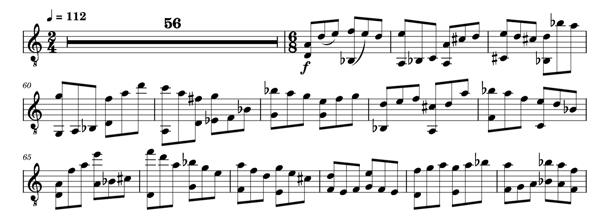 |
Hallowed be Thy Name by Iron Maiden |
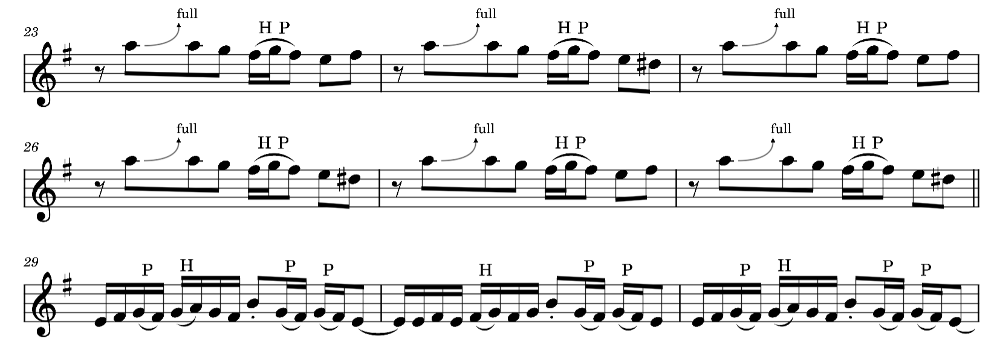 |
Uses “some” functional harmony, including tonic, predominant, and dominant functions to create tension and release within the music. However in the late Romantic-era, there was a shift in use of chromaticism, breaking away from functional harmony to create more dissonant chords. With many composers using extended chords and unique chord progressions. The use of modes are very popular within metal music too, especially phrygian dominant in more heavier cases of metal music.
Ghost of Perdition by Opeth (Solo) |
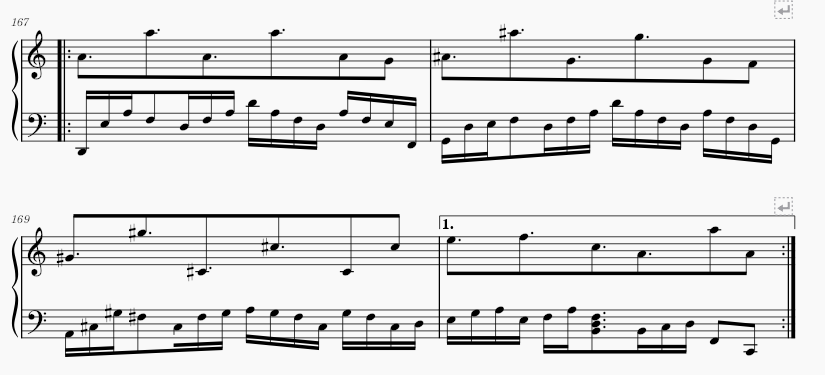 |
Ghost of Perdition by Opeth (Bridge) |
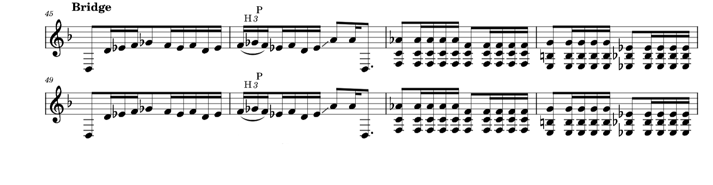 |
These 2 sections from “Ghost of Perdition” showcase the eeriness of using the phrygian dominant scale. ( 1 b2 3 4 5 b6 b7) Throughout this song there is frequent modal mixture, using notes and chords from its parallel and relative keys all while staying in D minor. The first audio clip is the guitar solo, we see from the piano reduction that the progression starts on I, moves to iv then uses the major V, using more notes than just the raised 7th, incorporating the F# and G# from A major. The second clip is a riff in the bridge that uses notes of the phrygian dominant. Starting on a low D due to being in dropped D tuning, its followed by an Eb then soon a Gb (F#) with the Gb being an eighth note giving it more emphasis by being held out longer. The chords at the end incorporates the neapolitan chord, unlike the classical period where it is viewed as a predominant, this song treats it as a dominant as it resolves back to tonic.
Throughout the many subgenres of rock and metal, the use of brass, woodwinds, strings, and choirs are commonly used. Generally used as a way to enforce and contribute to the melody while creating a huge mix in the background when listening to the songs. Often panning specific instruments in a way to make the song sound massive. Many rock songs take the form of classical music when creating larger works relating it to symphonies. Having multiple “movements” or “parts” in a single song with different melodies, motives, and feelings.
The use of a variety of instruments outside of the normal guitar, bass, and drums adds to the complexity and dramatic feeling of the piece by creating a Gregorian chant and orchestras carrying a theme with the ensemble. Often adding a wide palette of dynamics and sounds, contributing to an atmospheric texture to make the song sound more impactful and personal.
A huge part in metal music is often the physical aspect when going to concerts. Headbanging, mosh pits, and the wall of death. Many songs are throughout in a way to get the crowd moving to the song. So the use of rhythm and meter is stretched along all boundaries. Incorporating odd time signatures, ostinatos, polyrhythms and more. Thes use of techniques can make metal sound more aggressive and uncertain to the listener. An example for this one is Lateralus by Tool which incorporates the fibonacci sequence in its time signatures.
Lateralus by Tool |
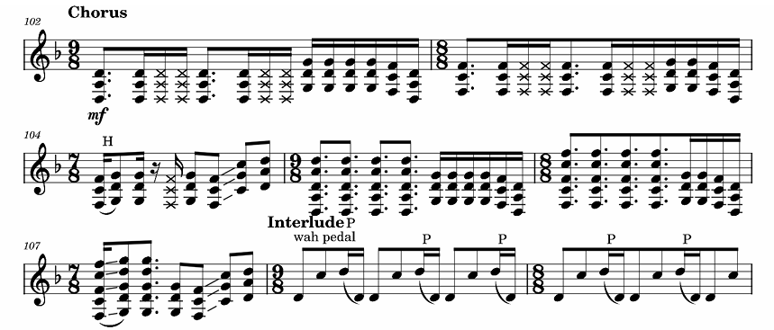 |
Bleed by Meshuggah |
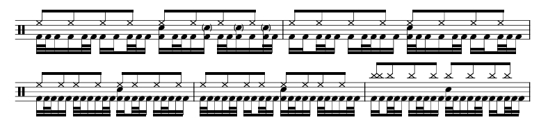 |
Most works by classical composers often require a high level of skill. Metal also incorporates difficult techniques at a fast tempo which does require years of training. Many of these solos, which can be treated like cadenzas, are often the moment for these instrumentalists to showcase their high level of skill to the captivated audience. The example used is Through the Fire and Flames by DragonForce. This song is well known by many guitarists and is often noted as one of the hardest songs to play.
Many artists create albums around a single idea or story, often telling it in a theatrical and dramatic way, inviting the listener to be a part of the immersive story. Rhapsody of Fire is an Italian Symphonic Power Metal band who created multiple albums based on a fantasized story about a fictional world where peace has come to an end with multiple nations and only the “Warrior of Ice” can stop the evil forces. The following link is a Wiki created for the storyline.
Rhapsody of Fire Wiki Storyline
One of the songs on their album is even a direct copy of Dvorak's 9th Symphony 4th Movement.
Another example is by Deathcore band Shadow of Intent from their album "Reclaimer", which tells the story of the Master Chief in the Halo series, which combines the story with metal music in an aggressive and immersive twist. This audio includes a first person perspective as if the words spoken were from the Master Chief character.
Angel of Salvation by Galneryus |
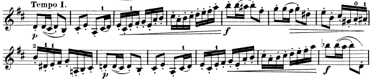 |
GALNERYUS takes themes and motifs from Tchaikovsky Violin Concerto in D Major Op. 35 and turns it into power metal. Power metal, known for its fast tempo, high pitch vocals, and fantasy-themed lyrics, aligns well with the theatrical ideas of classical music. The first clip uses the melody in the third movement “Allegro Vivacissimo". The sheet music comes directly from the score of Tchaikovsky's violin concerto.
Angel of Salvation by Galneryus |
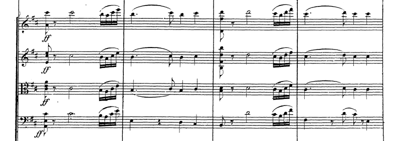 |
The second clip takes a melody from the first movement “Allegro Moderato” and uses it as an outro to the song, having the vocalist sing the melody and the background instruments accompany the ensemble. Taking the melody and giving it a new meaning. The sheet music comes directly from the score of Tchaikovsky's violin concerto.
Beethoven's Last Night' |
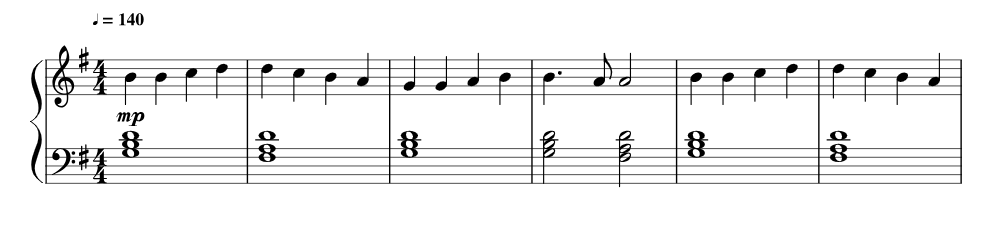 |
Composed a rock Opera about a fictional story of Beethoven the night before he passes where he meets the devil who wants to take his life, however Beethoven tricks the devil to keep his life. The songs included direct use of some of Beethoven's and other composers' works put in a rock theme. This clip starts off with “Flight of the Bumblebee” before transitioning to “Ode to Joy”
The Red Baron by Sabaton |
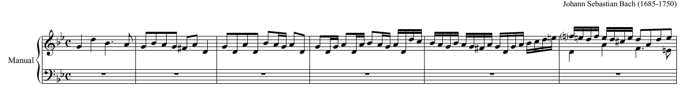 |
Directly uses Fugue in G minor BWV 578 by Johann Sebastian Bach as the intro before this Swedish Metal Band comes in with distorted guitars. The song also includes an organ solo right before a guitar solo.
Metal Heart by Accept |
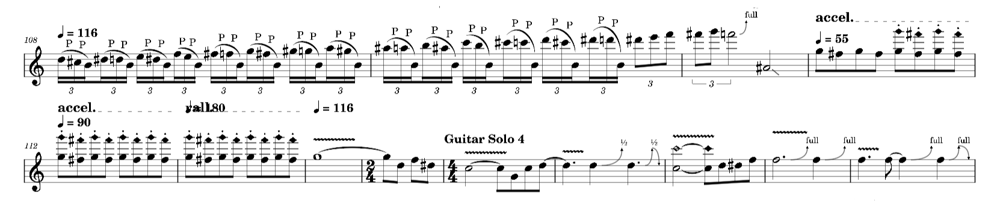 |
This band credits Beethoven and Tchaiksovsky on the album credits, which shows the importance of classical music in these musicians' lives. This song bases its melodies around Beethoven’s Fur Elise and Tchaikovsky’s Marche Slave in Bb. As this clip shows, the 2nd half of the guitar solo transitions into the melody of Fur Elise, with it being the only melody being played, showcasing the importance of it.
Play With Me by Extreme |
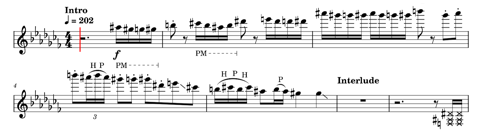 |
Another power metal that uses themes from classical music, Extreme uses Rondo Alla Turca as the intro leading into the main theme. The guitarist, Nuno Bettencourt, incorporates violin like techniques with fast arpeggios and scale runs, often similar to Niccolo Paganini.
Far Beyond the Sun by Yngwie Malmsteen |
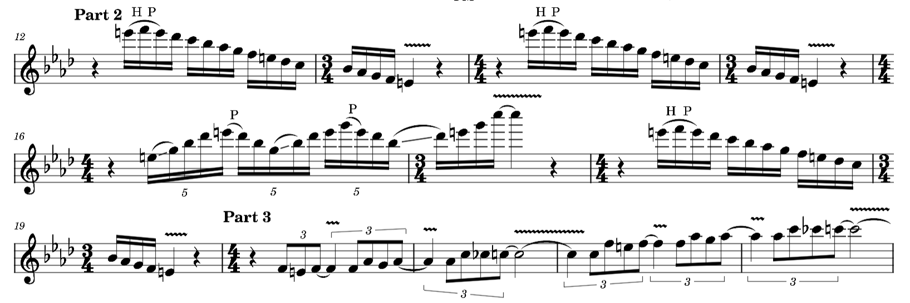 |
Yngwie Malmsteen is known as a pioneer for the subgenre called neoclassical metal, known for blending classical composition techniques heavy often as instrumentals. Often talking about his inspiration from J.S. Bach and Niccolo Paganini. This song features many fast runs across scales and arpeggios similar to Vivaldi’s compositions. With heavy emphasis on harmonic minor due to the E naturals.
Dance of Eternity by Dream Theater |
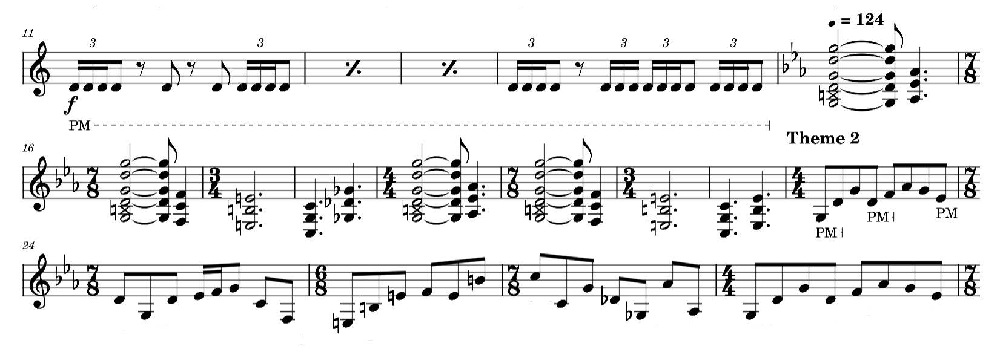 |
All of Dream Theater’s founding members met at a conservatory studying music which explains many reasons why their music reflects classical music. This piece incorporating 108 time signatures in 7 minutes uses these key changes to support their musical ideas. Using metric modulation to swiftly change tempo and feel to advance the song. This can often create a rhythmic tension with the listen until it resolves in a comfortable groove.
Concerto by Cacophony |
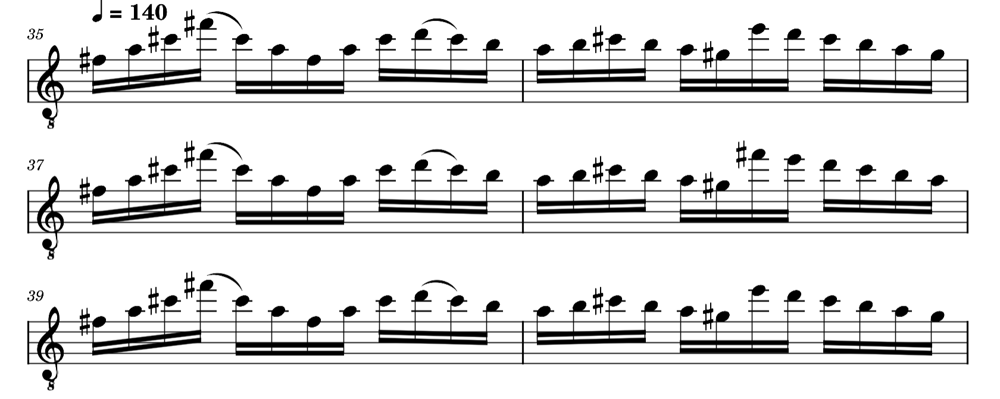 |
With the name of this song being called “Concerto” this creates an obvious correlation with how this song is composed. This instrumental song consists of many solo passages by guitarists Jason Becker and Marty Friedman. The guitarists in this song use sequences, trills, and sweep picking, which is the guitar equivalent to advanced violin techniques. These sequences often evolve throughout the song, creating variations and modulating off of it.
Dee by Ozzy Osbourne |
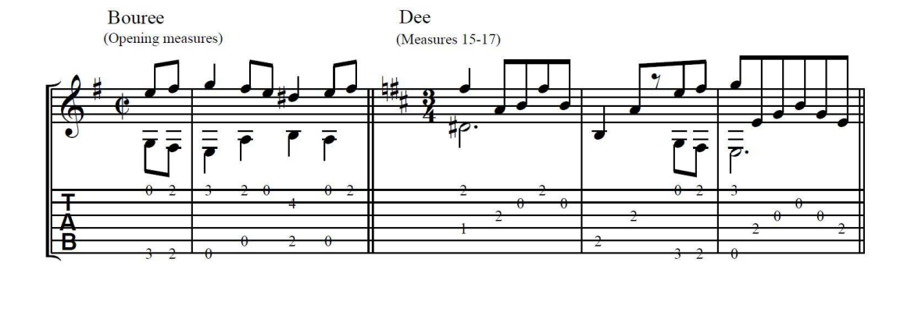 |
Randy Rhodes wrote this guitar interlude called “Dee” referring to the key signature D major. He was very inspired by classical music, specifically classical guitar, known for talking about Andres Segovia’s interpretation of Baroque pieces. “Dee” has similarities to the Bach Bouree in Em especially with the counterpuntal notes.
One of the biggest names in rock and metal, Metallica and the San Francisco orchestra played a couple live shows together, making an album off of it, doing renditions of their own music incorporating an orchestra. Each show they played was sold out to 18,000 people per night.
Deep Purple’s founding guitarist composed “The Concert for Group and Orchestra” to play with The Royal Philharmonic Orchestra in 1969, releasing it on an album later that year. This was monumental at the time due to this being the first time a rock band collaborated with an orchestra and made an album. This album became an inspiration for many people and paved the way for blending the genres.
Since imitation is the sincerest form of flattery, metal quotes often include "note for note" copy or an imitation of the classical style. As used in "Dee" by Ozzy Osbourne, the guitarist Randy Rhodes was inspired by classical guitar techniques, specifically Andres Segovia’s interpretations of baroque pieces. This led to Randy Rhodes creating a 50 second classical guitar interlude on the album “Blizzard of Ozz”.
By applying the parameters of these quotes into other genres of music, we start to see the resemblance and effect of classical music. Quotes are often used for narrative purposes to create the setting of the album. For example the use of gregorian chants combined with metal can create gothic and dark emotional music, emerging the listener to a environment that can be unsettling and unpredictable. While the reimagining of a violin passage into a distorted guitar shredding can be triumphant and upbeat.
As Robert Walser stated "Here the usefulness of Baroque materials depends on both their aura as 'classical' and their present semiotic value, to the extent these meanings are separable. For although this music was composed long ago, it is still circulating, producing meanings in contemporary culture." (Walser 1992) This statement still holds value and truth to this day as these "materials" have found themselves in a genre that continues to expand and thrive while respecting the value that the great composers before them.
Walser - Eruptions: Heavy Metal Appropriations of Classical Virtuosity Vol. 11, No. 3 (Oct., 1992) pp. 263-308
Fletcher - Classical Antiquity, Heavy Metal Music, and European Identity (October 3, 2019) pp. 223-246